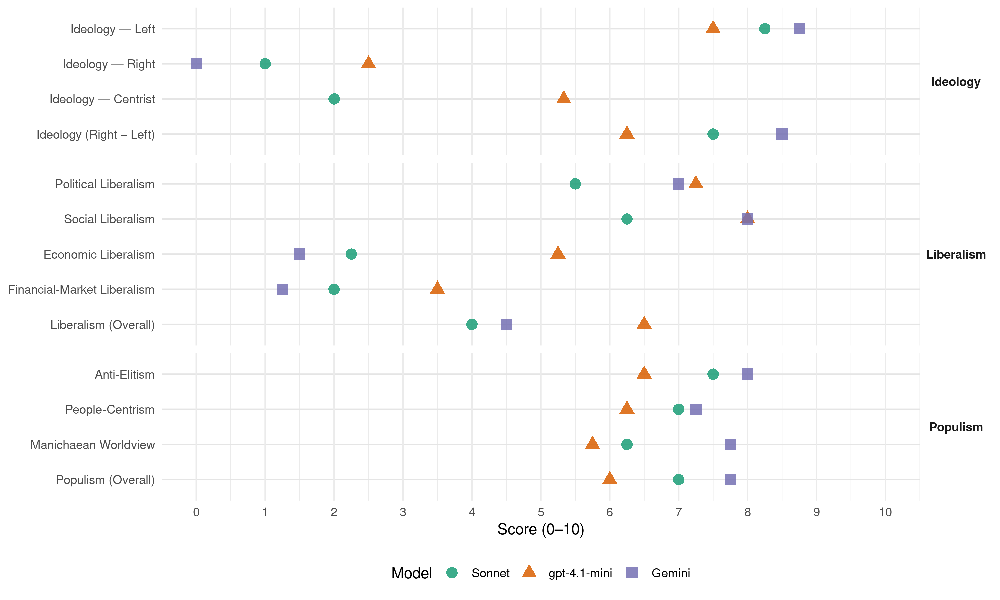

SYRIZA-EKN (Greece, 2012)
manifesto_id 34212_201206
Get full text: This site shows derived annotations and short verbatim quotes only. The full manifesto text is © Manifesto Project / WZB — obtain it via manifesto-project.wzb.eu using the manifesto_id above.
Headline scores
| Dimension | Sonnet | gpt-4.1-mini | Gemini |
|---|---|---|---|
| Populism (Overall) | 7.0 | 6.0 | 7.8 |
| Anti-Elitism | 7.5 | 6.5 | 8.0 |
| People-Centrism | 7.0 | 6.2 | 7.2 |
| Manichaean Worldview | 6.2 | 5.8 | 7.8 |
| Ideology (Right − Left) | 7.5 | 6.2 | 8.5 |
| Liberalism (Overall) | 4.0 | 6.5 | 4.5 |
| Political Liberalism | 5.5 | 7.2 | 7.0 |
| Social Liberalism | 6.2 | 8.0 | 8.0 |
| Economic Liberalism | 2.2 | 5.2 | 1.5 |
| Financial-Market Liberalism | 2.0 | 3.5 | 1.2 |
Evidence per dimension
Economic Liberalism
Gemini · score 2.0 · verified · chunk 1
“νεοφιλελεύθερης έμπνευσης «διαρθρωτικές αλλαγές» δεν λύνουν”
ανισοτήτων ως συστατικό περιεχόμενό της. v. Οι νεοφιλελεύθερης έμπνευσης «διαρθρωτικές αλλαγές» δεν λύνουν τα κοινωνικά προβλήματα
Gemini · score 1.0 · verified · chunk 2
“κυρίαρχες άγριες νεοφιλελεύθερες επιλογές”
πυρήνα τους την κοινωνική δικαιοσύνη. Οι κυρίαρχες άγριες νεοφιλελεύθερες επιλογές και ειδικότερα οι επιλογές των μνημονίων
Gemini · score 2.0 · verified · chunk 3
“σε συνθήκες ακραίου νεοφιλελευθερισμού”
Το κυρίαρχο πρότυπο παραγωγής και κατανάλωσης, σε συνθήκες ακραίου νεοφιλελευθερισμού, αδυνατεί να καλύψει βασικές ανάγκες
Gemini · score 1.0 · verified · chunk 4
“απορρίπτει την ιδιωτικοποίηση της διαχείρισης”
Ο ΣΥΡΙΖΑ/ΕΚΜ απορρίπτει την ιδιωτικοποίηση της διαχείρισης των απορριμμάτων και τη λογική
gpt-4.1-mini · score 6.0 · verified · chunk 1
“Η ανάπτυξη προϋποθέτει τον οικολογικό μετασχηματισμό, την αναπτυξιακή αναδιανομή”
iv. Η ανάπτυξη προϋποθέτει τον οικολογικό μετασχηματισμό, την αναπτυξιακή αναδιανομή, την καταπολέμηση της φτώχειας, της ανεργίας και των ανισοτήτων ως συστατικό περιεχόμενό της.
gpt-4.1-mini · score 5.0 · verified · chunk 2
“αναπτυξιακές συνεργασίες με τρίτες χώρες”
Ανάπτυξη ισότιμων σχέσεων με άλλες χώρες στο πλαίσιο της ανάπτυξης της οικονομικής διπλωματίας και αναπτυξιακές συνεργασίες με τρίτες χώρες.
gpt-4.1-mini · score 6.0 · verified · chunk 3
“ανάπτυξη σχέσεων ισότιμης συνεργασίας στα Βαλκάνια και στη Μεσόγειο”
Προτείνουμε μια νέα πολυδιάστατη ενεργητικά φιλειρηνική εξωτερική πολιτική της Ελλάδας, απαλλαγμένη από τον ατλαντισμό, με ανάπτυξη σχέσεων ισότιμης συνεργασίας στα Βαλκάνια και στη Μεσόγειο, όπως και με τη Ρωσία, αλλά και με χώρες εκτός της Ευρώπης (Κίνα, Ινδία, Λατινική Αμερική).
gpt-4.1-mini · score 4.0 · verified · chunk 4
“ενίσχυση της τοπικής αυτοδιοίκησης”
Η αυτοδιοίκηση θα ενισχυθεί, με όλες τις απαραίτητες, χαμηλού κόστους και μεγάλης απόδοσης υποδομές, ώστε να προχωρήσει σε ολοκληρωμένες διαδικασίες ανακύκλωσης με τη συμμετοχή των τοπικών κοινωνιών, των εκπαιδευτικών φορέων και των κινημάτων που εφαρμόζουν έμπρακτα τις παραπάνω αρχές και συμβάλλουν στην αντίστοιχη αγωγή του πολίτη.
Sonnet · score 3.0 · verified · chunk 1
“αντίποδες των καταστροφικών μνημονίων”
κατευθύνσεις που βρίσκονται στους αντίποδες των καταστροφικών μνημονίων: i. Αρνούμαστε τη θεωρία της «συλλογικής ενοχής»
Sonnet · score 2.0 · verified · chunk 2
“κυρίαρχες άγριες νεοφιλελεύθερες επιλογές”
Οι κυρίαρχες άγριες νεοφιλελεύθερες επιλογές και ειδικότερα οι επιλογές των μνημονίων τα τελευταία χρόνια συσσώρευσαν γύρω μας κοινωνικά ερείπια
Sonnet · score 2.0 · verified · chunk 3
“νεοφιλελεύθερων ιδιωτικών εταιριών του δημοσίου”
Κατάργηση των πάσης φύσης νεοφιλελεύθερων ιδιωτικών εταιριών του δημοσίου οι οποίες εκποιούν δημόσια περιουσία (ΚΕΔ, ΕΤΑ Α.Ε. κ.α.) και της σχετικής νομοθεσίας.
Sonnet · score 2.0 · verified · chunk 4
“απορρίπτει την ιδιωτικοποίηση της διαχείρισης”
Ο ΣΥΡΙΖΑ/ΕΚΜ απορρίπτει την ιδιωτικοποίηση της διαχείρισης των απορριμμάτων και τη λογική μιας τεχνικής αντιμετώπισης του θέματος
Financial-Market Liberalism
Gemini · score 1.0 · verified · chunk 1
“Δημόσια ιδιοκτησία και κοινωνικός έλεγχος των τραπεζών”
να διασφαλιστούν τα συμφέροντα του ελληνικού δημοσίου και των Ελλήνων φορολογουμένων. Δημόσια ιδιοκτησία και κοινωνικός έλεγχος των τραπεζών που ανακεφαλαιοποιούνται με δημόσιο χρήμα.
Gemini · score 2.0 · verified · chunk 2
“διαπραγμάτευσης του δημόσιου χρέους”
λέον, στο πλαίσιο της διαπραγμάτευσης του δημόσιου χρέους, σημαντική ανακούφιση θα αποτελέσει η
Gemini · score 1.0 · verified · chunk 3
“Οι αγορές ρύπων άνθρακα και οι άλλοι αγοραίοι μηχανισμοί”
Οι αγορές ρύπων άνθρακα και οι άλλοι αγοραίοι μηχανισμοί που παρουσιάζονται ως προσπάθειες να δημιουργηθούν χρηματιστηριακές αξίες για τον άνθρακα που εξοικονομείται ή αποθηκεύεται, δεν είναι μόνο αναποτελεσματικές
Gemini · score 1.0 · verified · chunk 4
“μέσω του ελέγχου του τραπεζικού συστήματος”
Ο ΣΥΡΙΖΑ/ΕΚΜ, μέσω του ελέγχου του τραπεζικού συστήματος, θα ενεργοποιήσει όλα τα κοινοτικά
gpt-4.1-mini · score 5.0 · mixed · chunk 1
“Η ανακεφαλαιοποίηση των τραπεζών με δημόσιο έλεγχο”
Η ανακεφαλαιοποίηση των τραπεζών με την έκδοση κοινών μετά ψήφου μετοχών, ώστε να διασφαλιστούν τα συμφέροντα του ελληνικού δημοσίου και των Ελλήνων φορολογουμένων. Δημόσια ιδιοκτησία και κοινωνικός έλεγχος των τραπεζών που ανακεφαλαιοποιούνται με δημόσιο χρήμα.
gpt-4.1-mini · score 4.0 · verified · chunk 2
“Εξωτερική χρηματοδότηση Επανασχεδιασμός του ΕΣΠΑ και αύξηση της απορροφητικότητάς του”
Εξωτερική χρηματοδότηση Επανασχεδιασμός του ΕΣΠΑ και αύξηση της απορροφητικότητάς του. Ευρωπαϊκό πρόγραμμα χρηματοδότησης επενδύσεων στις χώρες-μέλη της Ε.Ε. για την αντιμετώπιση της ύφεσης.
gpt-4.1-mini · score 3.0 · verified · chunk 4
“εμπλοκή του τραπεζικού τομέα, μέσω εγγυητικών επιστολών ή/και δανείων”
Όμως, η εμπλοκή του τραπεζικού τομέα, μέσω εγγυητικών επιστολών ή/και δανείων σε μικρές επιχειρήσεις, έχει μέχρι σήμερα αρνητικά αποτελέσματα στην απορρόφηση των κονδυλίων, καθώς οι τράπεζες ενδιαφέρονται μόνο για μεγάλες επιχειρήσεις και δεν τίθεται κανένα κοινωνικό κριτήριο (π.χ. θέσεις εργασίας) στη στήριξη μιας επένδυσης.
Sonnet · score 2.0 · verified · chunk 1
“Δημόσια ιδιοκτησία και κοινωνικός έλεγχος των τραπεζών”
Δημόσια ιδιοκτησία και κοινωνικός έλεγχος των τραπεζών που ανακεφαλαιοποιούνται με δημόσιο χρήμα.
Sonnet · score 2.0 · verified · chunk 2
“σύνδεση του επιτοκίου”
σημαντική ανακούφιση θα αποτελέσει η σύνδεση του επιτοκίου, μετά τη λήξη της αναστολής αποπληρωμής τόκων, με μια ρήτρα μεγέθυνσης
Sonnet · score 2.0 · verified · chunk 3
“αγορές ρύπων άνθρακα και οι άλλοι αγοραίοι μηχανισμοί”
Οι αγορές ρύπων άνθρακα και οι άλλοι αγοραίοι μηχανισμοί που παρουσιάζονται ως προσπάθειες να δημιουργηθούν χρηματιστηριακές αξίες για τον άνθρακα που εξοικονομείται ή αποθηκεύεται, δεν είναι μόνο αναποτελεσματικές
Sonnet · score 2.0 · verified · chunk 4
“εμπλοκή του τραπεζικού τομέα”
η εμπλοκή του τραπεζικού τομέα, μέσω εγγυητικών επιστολών ή/και δανείων σε μικρές επιχειρήσεις, έχει μέχρι σήμερα αρνητικά αποτελέσματα στην απορρόφηση των κονδυλίων, καθώς οι τράπεζες ενδιαφέρονται μόνο για μεγάλες επιχειρήσεις
Political Liberalism
Gemini · score 6.0 · verified · chunk 1
“θεσμούς καινούργιους, δημοκρατικούς, θεσμούς κοινωνικού ελέγχου”
εμπιστοσύνης προς τους θεσμούς, τη Βουλή, τα κόμματα, τα συνδικάτα. Άρα, μόνο μέσα από θεσμούς καινούργιους, δημοκρατικούς, θεσμούς κοινωνικού ελέγχου, θεσμούς άμεσης δημοκρατίας
Gemini · score 8.0 · verified · chunk 2
“Εκδημοκρατισμός και διαφάνεια στη δομή”
τακτικούς άξονες. 1. Εκδημοκρατισμός και διαφάνεια στη δομή και τη λειτουργία του πολιτικού συστήματος
Gemini · score 7.0 · verified · chunk 3
“Εμπνέεται από τις αρχές της δημοκρατίας”
Εμπνέεται από τις αρχές της δημοκρατίας, του σεβασμού των ανθρωπίνων δικαιωμάτων ανεξαρτήτως θρησκεύματος
Gemini · score 7.0 · verified · chunk 4
“καθιέρωση της απλής αναλογικής ως πάγιο”
Προχωράμε σε μέτρα εκδημοκρατισμού, καθιέρωση της απλής αναλογικής ως πάγιο εκλογικό σύστημα σε όλους τους αθλητικούς
gpt-4.1-mini · score 7.0 · verified · chunk 1
“Η δικαιοσύνη πρέπει να ανταποκριθεί στο πάνδημο αίτημα να τιμωρηθούν οι υπεύθυνοι”
Η δικαιοσύνη πρέπει να ανταποκριθεί στο πάνδημο αίτημα να τιμωρηθούν οι υπεύθυνοι, όσο ψηλά κι αν βρίσκονται, στο πλαίσιο πάντα του Συντάγματος και του κράτους δικαίου. Η Βουλή πρέπει να καταργήσει τους νόμους που θεσμοθετούν και προστατεύουν τον δικομματισμό, να καθιερώσει την απλή αναλογική και να βάλει τέλος στην πολυνομία, που επιτρέπει την ανομία των ιδιοτελών συμφερόντων.
gpt-4.1-mini · score 7.0 · verified · chunk 2
“Εκδημοκρατισμός και διαφάνεια στη δομή και τη λειτουργία του πολιτικού συστήματος”
Στρατηγικός μας στόχος είναι ο εκδημοκρατισμός και η διαφάνεια στη δομή και τη λειτουργία του πολιτικού συστήματος, με αναμόρφωση του συνταγματικού πλαισίου και ενίσχυση της νομοθετικής πρωτοβουλίας.
gpt-4.1-mini · score 8.0 · verified · chunk 3
“Επιδιώκουμε την άμεση ανάκληση της ελληνικής δύναμης από το Αφγανιστάν”
Θα επιδιώξουμε την άμεση ανάκληση της ελληνικής δύναμης από το Αφγανιστάν, καθώς και από άλλες στρατιωτικές αποστολές του ΝΑΤΟ ή της Ευρωπαϊκής Ένωσης. Σταθερή και αμετάκλητη παραμένει η στρατηγική μας θέση για την ανάγκη να αποδεσμευτούμε από το ΝΑΤΟ.
gpt-4.1-mini · score 7.0 · verified · chunk 4
“δημοκρατική εκλογική διαδικασία και απλή αναλογική”
Εις το εξής όλοι, από τον Πρόεδρο έως τα μέλη της, εκλέγονται από τους φορείς που την απαρτίζουν με ισότιμη δημοκρατική εκλογική διαδικασία και απλή αναλογική.
Sonnet · score 5.0 · mixed · chunk 1
“θεσμούς άμεσης δημοκρατίας”
θεσμούς κοινωνικού ελέγχου, θεσμούς άμεσης δημοκρατίας, μόνο με αυτό τον τρόπο μπορούμε να κερδίσουμε την εμπιστοσύνη
Sonnet · score 5.0 · mixed · chunk 2
“εκδημοκρατισμό και τη διαφάνεια του πολιτικού συστήματος”
με στόχο τον εκδημοκρατισμό και τη διαφάνεια του πολιτικού συστήματος, την αναζωογόνηση και την αποτελεσματικότητα του δημόσιου τομέα
Sonnet · score 6.0 · verified · chunk 3
“εκδημοκρατισμού του συστήματος των διεθνών σχέσεων”
ενεργητική παρουσία της Ελλάδας σε διεθνείς οργανισμούς όπως ο ΟΗΕ και η ΟΥΝΕΣΚΟ, καθώς και σε διεθνείς πρωτοβουλίες εκδημοκρατισμού του συστήματος των διεθνών σχέσεων
Sonnet · score 5.0 · verified · chunk 4
“εκδημοκρατισμό στη λειτουργία”
Ορίζει ως διακυβεύματα την αναδιανομή των πόρων με ριζικά διαφορετικό σκεπτικό και κοινωνικούς όρους, την ενδυνάμωση του κοινωνικού ελέγχου, την επικράτηση της διαφάνειας και τον εκδημοκρατισμό στη λειτουργία
Liberalism (Overall)
Gemini · score 4.0 · verified · chunk 1
“αξίες της αλληλεγγύης, της δικαιοσύνης, της ελευθερίας, της ισότητας”
Και το δικό μας πρόγραμμα στηρίζεται ακριβώς στις αξίες της αλληλεγγύης, της δικαιοσύνης, της ελευθερίας, της ισότητας, της οικολογικής υπευθυνότητας.
Gemini · score 5.0 · verified · chunk 2
“Εκδημοκρατισμός και διαφάνεια στη δομή”
τακτικούς άξονες. 1. Εκδημοκρατισμός και διαφάνεια στη δομή και τη λειτουργία του πολιτικού συστήματος
Gemini · score 5.0 · verified · chunk 3
“Εμπνέεται από τις αρχές της δημοκρατίας”
Εμπνέεται από τις αρχές της δημοκρατίας, του σεβασμού των ανθρωπίνων δικαιωμάτων ανεξαρτήτως θρησκεύματος
Gemini · score 4.0 · verified · chunk 4
“απορρίπτει την ιδιωτικοποίηση της διαχείρισης”
Ο ΣΥΡΙΖΑ/ΕΚΜ απορρίπτει την ιδιωτικοποίηση της διαχείρισης των απορριμμάτων και τη λογική
gpt-4.1-mini · score 6.0 · verified · chunk 1
“Η ανακεφαλαιοποίηση των τραπεζών με δημόσιο έλεγχο”
Η ανακεφαλαιοποίηση των τραπεζών με την έκδοση κοινών μετά ψήφου μετοχών, ώστε να διασφαλιστούν τα συμφέροντα του ελληνικού δημοσίου και των Ελλήνων φορολογουμένων. Δημόσια ιδιοκτησία και κοινωνικός έλεγχος των τραπεζών που ανακεφαλαιοποιούνται με δημόσιο χρήμα.
gpt-4.1-mini · score 6.0 · verified · chunk 2
“Εκδημοκρατισμός και διαφάνεια στη δομή και τη λειτουργία του πολιτικού συστήματος”
Στρατηγικός μας στόχος είναι ο εκδημοκρατισμός και η διαφάνεια στη δομή και τη λειτουργία του πολιτικού συστήματος, με αναμόρφωση του συνταγματικού πλαισίου και ενίσχυση της νομοθετικής πρωτοβουλίας.
gpt-4.1-mini · score 8.0 · verified · chunk 3
“Επιδιώκουμε την άμεση ανάκληση της ελληνικής δύναμης από το Αφγανιστάν”
Θα επιδιώξουμε την άμεση ανάκληση της ελληνικής δύναμης από το Αφγανιστάν, καθώς και από άλλες στρατιωτικές αποστολές του ΝΑΤΟ ή της Ευρωπαϊκής Ένωσης. Σταθερή και αμετάκλητη παραμένει η στρατηγική μας θέση για την ανάγκη να αποδεσμευτούμε από το ΝΑΤΟ.
gpt-4.1-mini · score 6.0 · verified · chunk 4
“δημοκρατική εκλογική διαδικασία και απλή αναλογική”
Εις το εξής όλοι, από τον Πρόεδρο έως τα μέλη της, εκλέγονται από τους φορείς που την απαρτίζουν με ισότιμη δημοκρατική εκλογική διαδικασία και απλή αναλογική.
Sonnet · score 4.0 · verified · chunk 1
“νέου τύπου διαρθρωτικές αλλαγές”
Η διέξοδος από την κρίση απαιτεί ανατροπές, νέου τύπου διαρθρωτικές αλλαγές, ριζοσπαστικές μεταρρυθμίσεις
Sonnet · score 4.0 · mixed · chunk 2
“Η Υγεία δεν μπορεί να είναι εμπόρευμα”
Η Υγεία δεν μπορεί να είναι εμπόρευμα. Είναι κοινωνικό αγαθό και δικαίωμα όλων.
Sonnet · score 4.0 · verified · chunk 3
“αντινεοφιλελεύθερη και αντικαπιταλιστική κατεύθυνση”
νέες πρωτοβουλίες περιφερειακής συνεργασίας, όπως αυτές που διαφαίνονται στη Λατινική Αμερική, που έχουν σταθερή ανάπτυξη σε αντινεοφιλελεύθερη και αντικαπιταλιστική κατεύθυνση.
Sonnet · score 4.0 · verified · chunk 4
“απορρίπτει την ιδιωτικοποίηση της διαχείρισης”
Ο ΣΥΡΙΖΑ/ΕΚΜ απορρίπτει την ιδιωτικοποίηση της διαχείρισης των απορριμμάτων και τη λογική μιας τεχνικής αντιμετώπισης του θέματος
Anti-Elitism
Gemini · score 8.0 · verified · chunk 1
“διακυβέρνηση της χώρας από το φαύλο δικομματικό σύστημα”
Ο τρίτος λόγος είναι ότι, μέσα από τη διακυβέρνηση της χώρας από το φαύλο δικομματικό σύστημα και μέσα από τις σκληρές
Gemini · score 9.0 · verified · chunk 2
“Το μεγαλοαστικό πολιτικό και οικονομικό κατεστημένο”
ελληνικής νεολαίας. Το μεγαλοαστικό πολιτικό και οικονομικό κατεστημένο της χώρας και ειδικότερα οι ηγεσίες
Gemini · score 7.0 · verified · chunk 3
“με το καθεστώς που διαμόρφωσαν διαδοχικά”
παραγκωνισμό του διπλωματικού σώματος και χρησιμοποίηση εξωυπηρεσιακών ειδικών συμβούλων, δηλαδή με το καθεστώς που διαμόρφωσαν διαδοχικά στο Υπ. Εξ. οι διατελέσαντες τα τελευταία χρόνια υπουργοί και πρωθυπουργοί
Gemini · score 8.0 · verified · chunk 4
“εκχώρησης δημόσιου πλούτου σε μεγαλοεπιχειρηματίες”
περιβαλλοντικής λεηλασίας, οικονομικού μαρασμού των τοπικών κοινωνιών και εκχώρησης δημόσιου πλούτου σε μεγαλοεπιχειρηματίες. Χαρακτηριστικές περιπτώσεις
gpt-4.1-mini · score 8.0 · verified · chunk 1
“αρνούμαστε τη θεωρία της «συλλογικής ενοχής» του ελληνικού λαού”
i. Αρνούμαστε τη θεωρία της «συλλογικής ενοχής» του ελληνικού λαού για τις πολιτικές που άσκησαν ελληνικές και ευρωπαϊκές κυβερνήσεις. Είναι αυτές οι πολιτικές που πρέπει να ανατραπούν. Αρνούμαστε αντιλήψεις που σκόπιμα κρύβουν τις ευθύνες των πολιτικών που εφαρμόσθηκαν και των συμφερόντων που ωφελήθηκαν από αυτές.
gpt-4.1-mini · score 8.0 · verified · chunk 2
“Το μεγαλοαστικό πολιτικό και οικονομικό κατεστημένο της χώρας”
Το μεγαλοαστικό πολιτικό και οικονομικό κατεστημένο της χώρας και ειδικότερα οι ηγεσίες ΠΑΣΟΚ και ΝΔ, δεν αφήνουν πίσω τους απλώς καμένη γη αλλά κάτι πολύ χειρότερο και τραγικότερο.
gpt-4.1-mini · score 3.0 · verified · chunk 3
“με το σύμφωνο στρατιωτικής συνεργασίας με το Ισραήλ”
Ειδικά η Ελλάδα κινδυνεύει να εμπλακεί, άμεσα ή έμμεσα, σε ενδεχόμενη επίθεση εναντίον του Ιράν ή και σε χώρες του αραβικού κόσμου, με το σύμφωνο στρατιωτικής συνεργασίας με το Ισραήλ, αλλά και με χρήση της βάσης της Σούδας από το ΝΑΤΟ. Και οι δύο αυτές δυνατότητες εμπλοκής πρέπει λοιπόν να καταργηθούν.
gpt-4.1-mini · score 7.0 · verified · chunk 4
“μάχη απέναντι στα κυρίαρχα οικονομικά και κοινωνικά συμφέροντα”
θα συνεχίσουμε να δίνουμε από κοινού τη μάχη απέναντι στα κυρίαρχα οικονομικά και κοινωνικά συμφέροντα, για τη θεμελίωση του περιβαλλοντικού δικαίου, την ανατροπή του σημερινού παραγωγικού - καταναλωτικού προτύπου και την ισόρροπη, συμβατή με το περιβάλλον ανάπτυξη υπέρ της μεγάλης κοινωνικής πλειοψηφίας.
Sonnet · score 8.0 · verified · chunk 1
“φαύλο δικομματικό σύστημα”
μέσα από τη διακυβέρνηση της χώρας από το φαύλο δικομματικό σύστημα και μέσα από τις σκληρές και άνισες πολιτικές
Sonnet · score 9.0 · verified · chunk 2
“μεγαλοαστικό πολιτικό και οικονομικό κατεστημένο”
Το μεγαλοαστικό πολιτικό και οικονομικό κατεστημένο της χώρας και ειδικότερα οι ηγεσίες ΠΑΣΟΚ και ΝΔ, δεν αφήνουν πίσω τους απλώς καμένη γη
Sonnet · score 6.0 · verified · chunk 3
“σχεδιασμούς των ισχυρών συμμάχων”
ελληνική εξωτερική πολιτική εδώ και χρόνια είναι μια διαδοχή ασύμμετρων προσαρμογών στους σχεδιασμούς των ισχυρών συμμάχων (ΗΠΑ-ΝΑΤΟ-Ισραήλ, ηγεμονεύουσες δυνάμεις και ισχυρά κράτη της Ε.Ε.)
Sonnet · score 7.0 · verified · chunk 4
“εκχώρησης δημόσιου πλούτου σε μεγαλοεπιχειρηματίες”
παράδειγμα προς αποφυγήν περιβαλλοντικής λεηλασίας, οικονομικού μαρασμού των τοπικών κοινωνιών και εκχώρησης δημόσιου πλούτου σε μεγαλοεπιχειρηματίες
Ideology — Centrist
gpt-4.1-mini · score 6.0 · verified · chunk 1
“μια διαρκής προσπάθεια, ανοιχτή σε νέες ιδέες και καινοτόμες δράσεις”
5. Υπό αυτή την έννοια λοιπόν, το πρόγραμμα για εμάς είναι μια διαρκής διαδικασία. Δεν είναι ένα στατικό και αιώνιο κείμενο. Είναι μια διαρκής προσπάθεια, ανοιχτή σε νέες ιδέες και καινοτόμες δράσεις.
gpt-4.1-mini · score 5.0 · verified · chunk 2
“λαϊκής διακυβέρνησης με την εξής έννοια”
Έχουμε μπροστά μας ένα μοντέλο λαϊκής διακυβέρνησης με την εξής έννοια:– Λαϊκής, γιατί ο έλεγχος δεν θα είναι μόνο θεσμικός, αλλά αμεσοδημοκρατικός, από τα ζωντανό κίνημα το οποίο θα ελέγχει, θα διαμορφώνει προτάσεις για τους κρίσιμους τομείς της οικονομικής δραστηριότητας και του δημοσίου συμφέροντος και στο οποίο θα λογοδοτούμε.
gpt-4.1-mini · score 5.0 · verified · chunk 3
“με τον ελληνικό λαό σε εγρήγορση και με την ενεργητική συμβολή του απόδημου ελληνισμού”
Πολιτική συνολικής αναβάθμισης της διεθνούς θέσης της, με τον ελληνικό λαό σε εγρήγορση και με την ενεργητική συμβολή του απόδημου ελληνισμού. Θέλουμε ο ορίζοντας της διεθνούς παρουσίας της χώρας μας να μην εξαντλείται στα λεγόμενα εθνικά θέματα,
Sonnet · score 2.0 · verified · chunk 1
“ελληνικό λαό να αποφασίζει”
αποκατάσταση του κυριαρχικού δικαιώματος του ελληνικού λαού να αποφασίζει για τις τύχες του
Sonnet · score 2.0 · verified · chunk 2
“μοντέλο λαϊκής διακυβέρνησης”
τότε έχουμε μπροστά μας ένα μοντέλο λαϊκής διακυβέρνησης με την εξής έννοια
Sonnet · score 2.0 · verified · chunk 3
“χωρίς μεγαλοϊδεατισμούς”
κατοχυρώνει με ασφαλή τρόπο τα κυριαρχικά δικαιώματα της χώρας μας, χωρίς μεγαλοϊδεατισμούς και χωρίς προσαρμογή στους σχεδιασμούς
Sonnet · score 2.0 · verified · chunk 4
“κοινωνικό αγαθό και δικαίωμα κάθε πολίτη”
Στην αντίληψή μας κοινωνικό αγαθό και δικαίωμα κάθε πολίτη είναι να έχει ίσες ευκαιρίες για συμμετοχή χωρίς διακρίσεις στον αθλητισμό
Ideology — Left
Gemini · score 9.0 · verified · chunk 1
“ανάγκες των ανθρώπων είναι πάνω από τα κέρδη”
προτεραιοτήτων. Για εμάς λοιπόν οι ανάγκες των ανθρώπων είναι πάνω από τα κέρδη και πάνω από κάθε ιδιοτελές
Gemini · score 9.0 · verified · chunk 2
“αναδιανομής του πλούτου υπέρ των δυνάμεων”
κοινωνικά βάρβαρης μνημονιακής επιχείρησης αναδιανομής του πλούτου υπέρ των δυνάμεων του κεφαλαίου υπήρξε η πλήρης απορύθμιση
Gemini · score 8.0 · verified · chunk 3
“σε αντινεοφιλελεύθερη και αντικαπιταλιστική κατεύθυνση”
πρωτοβουλίες περιφερειακής συνεργασίας, όπως αυτές που διαφαίνονται στη Λατινική Αμερική, που έχουν σταθερή ανάπτυξη σε αντινεοφιλελεύθερη και αντικαπιταλιστική κατεύθυνση.
Gemini · score 9.0 · verified · chunk 4
“απορρίπτει και ξεπερνά το σημερινό νεοφιλελεύθερο”
αθλητισμός για τον άνθρωπο και όχι για τα κέρδη» απορρίπτει και ξεπερνά το σημερινό νεοφιλελεύθερο μοντέλο του εμπορευματοποιημένου
gpt-4.1-mini · score 8.0 · verified · chunk 1
“Η φορολόγηση του πλούτου και των υψηλών εισοδημάτων”
Η προσαρμογή που προτείνουμε θα προέλθει από τη φορολόγηση του πλούτου και των υψηλών εισοδημάτων, με στόχο την αύξηση των εσόδων από άμεσους φόρους στα μέσα ευρωπαϊκά επίπεδα (+4% του ΑΕΠ) σε ορίζοντα τετραετίας (1% του ΑΕΠ κάθε χρόνο) μέσα από μια ριζική μεταρρύθμιση του φορολογικού συστήματος, ώστε να εντοπίζεται το εισόδημα και η περιουσία κάθε πολίτη και να κατανέμεται δίκαια το φορολογικό βάρος.
gpt-4.1-mini · score 8.0 · verified · chunk 2
“πυρήνα τους την κοινωνική δικαιοσύνη”
Ο δρόμος της χώρας για μια θετική ανορθωτική διέξοδο είναι ανηφορικός και προϋποθέτει σκληρή προσπάθεια, υπεύθυνη και σοβαρή δουλειά από όλους, η οποία για να καταστεί δυνατή, απαιτεί πρώτα απ’ όλα πολιτικές που θα έχουν στο κέντρο και τον πυρήνα τους την κοινωνική δικαιοσύνη.
gpt-4.1-mini · score 7.0 · verified · chunk 3
“σταθερή ανάπτυξη σε αντινεοφιλελεύθερη και αντικαπιταλιστική κατεύθυνση”
όπως αυτές που διαφαίνονται στη Λατινική Αμερική, που έχουν σταθερή ανάπτυξη σε αντινεοφιλελεύθερη και αντικαπιταλιστική κατεύθυνση. Η ίδια διαπίστωση απαιτεί την ενεργητική παρουσία της Ελλάδας σε διεθνείς οργανισμούς όπως ο ΟΗΕ και η ΟΥΝΕΣΚΟ,
gpt-4.1-mini · score 7.0 · verified · chunk 4
“μάχη απέναντι στα κυρίαρχα οικονομικά και κοινωνικά συμφέροντα”
θα συνεχίσουμε να δίνουμε από κοινού τη μάχη απέναντι στα κυρίαρχα οικονομικά και κοινωνικά συμφέροντα, για τη θεμελίωση του περιβαλλοντικού δικαίου, την ανατροπή του σημερινού παραγωγικού - καταναλωτικού προτύπου και την ισόρροπη, συμβατή με το περιβάλλον ανάπτυξη υπέρ της μεγάλης κοινωνικής πλειοψηφίας.
Sonnet · score 9.0 · verified · chunk 1
“κόσμο της εργασίας”
μιας πλατιάς κοινωνικής συμμαχίας ανάμεσα στον κόσμο της εργασίας, τον κόσμο της γνώσης, του πολιτισμού και της νεολαίας
Sonnet · score 9.0 · verified · chunk 2
“αναδιανομής του πλούτου υπέρ των δυνάμεων του κεφαλαίου”
Πυρήνας της κοινωνικά βάρβαρης μνημονιακής επιχείρησης αναδιανομής του πλούτου υπέρ των δυνάμεων του κεφαλαίου
Sonnet · score 7.0 · verified · chunk 3
“αντινεοφιλελεύθερη και αντικαπιταλιστική κατεύθυνση”
νέες πρωτοβουλίες περιφερειακής συνεργασίας, όπως αυτές που διαφαίνονται στη Λατινική Αμερική, που έχουν σταθερή ανάπτυξη σε αντινεοφιλελεύθερη και αντικαπιταλιστική κατεύθυνση.
Sonnet · score 8.0 · verified · chunk 4
“δίκαιης διανομής του παραγόμενου πλούτου”
για την αριστερά που σκέφτεται και δρα στη λογική της ικανοποίησης των κοινωνικών αναγκών και της δίκαιης διανομής του παραγόμενου πλούτου
Ideology (Right − Left)
Gemini · score 9.0 · verified · chunk 1
“ανάγκες των ανθρώπων είναι πάνω από τα κέρδη”
προτεραιοτήτων. Για εμάς λοιπόν οι ανάγκες των ανθρώπων είναι πάνω από τα κέρδη και πάνω από κάθε ιδιοτελές
Gemini · score 9.0 · verified · chunk 2
“αναδιανομής του πλούτου υπέρ των δυνάμεων”
κοινωνικά βάρβαρης μνημονιακής επιχείρησης αναδιανομής του πλούτου υπέρ των δυνάμεων του κεφαλαίου υπήρξε η πλήρης απορύθμιση
Gemini · score 8.0 · verified · chunk 3
“σε αντινεοφιλελεύθερη και αντικαπιταλιστική κατεύθυνση”
πρωτοβουλίες περιφερειακής συνεργασίας, όπως αυτές που διαφαίνονται στη Λατινική Αμερική, που έχουν σταθερή ανάπτυξη σε αντινεοφιλελεύθερη και αντικαπιταλιστική κατεύθυνση.
Gemini · score 8.0 · verified · chunk 4
“απορρίπτει και ξεπερνά το σημερινό νεοφιλελεύθερο”
αθλητισμός για τον άνθρωπο και όχι για τα κέρδη» απορρίπτει και ξεπερνά το σημερινό νεοφιλελεύθερο μοντέλο του εμπορευματοποιημένου
gpt-4.1-mini · score 7.0 · verified · chunk 1
“μια διαρκής προσπάθεια, ανοιχτή σε νέες ιδέες και καινοτόμες δράσεις”
5. Υπό αυτή την έννοια λοιπόν, το πρόγραμμα για εμάς είναι μια διαρκής διαδικασία. Δεν είναι ένα στατικό και αιώνιο κείμενο. Είναι μια διαρκής προσπάθεια, ανοιχτή σε νέες ιδέες και καινοτόμες δράσεις.
gpt-4.1-mini · score 7.0 · verified · chunk 2
“πυρήνα τους την κοινωνική δικαιοσύνη”
Ο δρόμος της χώρας για μια θετική ανορθωτική διέξοδο είναι ανηφορικός και προϋποθέτει σκληρή προσπάθεια, υπεύθυνη και σοβαρή δουλειά από όλους, η οποία για να καταστεί δυνατή, απαιτεί πρώτα απ’ όλα πολιτικές που θα έχουν στο κέντρο και τον πυρήνα τους την κοινωνική δικαιοσύνη.
gpt-4.1-mini · score 5.0 · verified · chunk 3
“σταθερή ανάπτυξη σε αντινεοφιλελεύθερη και αντικαπιταλιστική κατεύθυνση”
όπως αυτές που διαφαίνονται στη Λατινική Αμερική, που έχουν σταθερή ανάπτυξη σε αντινεοφιλελεύθερη και αντικαπιταλιστική κατεύθυνση. Η ίδια διαπίστωση απαιτεί την ενεργητική παρουσία της Ελλάδας σε διεθνείς οργανισμούς όπως ο ΟΗΕ και η ΟΥΝΕΣΚΟ,
gpt-4.1-mini · score 6.0 · verified · chunk 4
“μάχη απέναντι στα κυρίαρχα οικονομικά και κοινωνικά συμφέροντα”
θα συνεχίσουμε να δίνουμε από κοινού τη μάχη απέναντι στα κυρίαρχα οικονομικά και κοινωνικά συμφέροντα, για τη θεμελίωση του περιβαλλοντικού δικαίου, την ανατροπή του σημερινού παραγωγικού - καταναλωτικού προτύπου και την ισόρροπη, συμβατή με το περιβάλλον ανάπτυξη υπέρ της μεγάλης κοινωνικής πλειοψηφίας.
Sonnet · score 8.0 · verified · chunk 1
“Αριστερά των εργαζομένων, των μη προνομιούχων”
Γιατί ο ΣΥΡΙΖΑ είναι η Αριστερά των εργαζομένων, των μη προνομιούχων, των νέων γενεών
Sonnet · score 9.0 · verified · chunk 2
“στρατηγικό σοσιαλιστικό ορίζοντα”
στο πλαίσιο μιας νέας προοδευτικής πορείας με στρατηγικό σοσιαλιστικό ορίζοντα
Sonnet · score 6.0 · verified · chunk 3
“αντινεοφιλελεύθερη και αντικαπιταλιστική κατεύθυνση”
νέες πρωτοβουλίες περιφερειακής συνεργασίας, όπως αυτές που διαφαίνονται στη Λατινική Αμερική, που έχουν σταθερή ανάπτυξη σε αντινεοφιλελεύθερη και αντικαπιταλιστική κατεύθυνση.
Sonnet · score 7.0 · verified · chunk 4
“δίκαιης διανομής του παραγόμενου πλούτου”
για την αριστερά που σκέφτεται και δρα στη λογική της ικανοποίησης των κοινωνικών αναγκών και της δίκαιης διανομής του παραγόμενου πλούτου
Ideology — Right
Gemini · score 0.0 · verified · chunk 3
“ανοιχτό ιδεολογικό και πολιτικό μέτωπο στον πόλεμο”
καταθέτει τη δική του εναλλακτική πρόταση για την εξωτερική πολιτική, η οποία έχει μονίμως ανοιχτό ιδεολογικό και πολιτικό μέτωπο στον πόλεμο, τον ιμπεριαλισμό, τον εθνικισμό, τον ρατσισμό
gpt-4.1-mini · score 2.0 · verified · chunk 2
“αντίθετοι με κάθε συμμετοχή της Ελλάδας στον λεγόμενο «πόλεμο κατά της τρομοκρατίας»”
Είμαστε αντίθετοι με κάθε συμμετοχή της Ελλάδας στον λεγόμενο «πόλεμο κατά της τρομοκρατίας», που χρησιμοποιείται για τον στρατιωτικό έλεγχο ολόκληρων περιοχών του πλανήτη και για την περιστολή των δημοκρατικών δικαιωμάτων των πολιτών.
gpt-4.1-mini · score 3.0 · verified · chunk 3
“εθνικιστικά μίση, με εμμονή στο απαραβίαστο των συνόρων”
Διεκδικούμε την προώθηση μιας ενεργητικά φιλειρηνικής Βαλκανικής πολιτικής, μακριά από επιλογές πολέμου και εθνικιστικά μίση, με εμμονή στο απαραβίαστο των συνόρων και στον πλήρη σεβασμό των ανθρώπινων δικαιωμάτων σε όλες τις χώρες,
Sonnet · score 1.0 · verified · chunk 1
“εθνικής κυριαρχίας”
στην ουσιαστική περιστολή της δημοκρατίας και της εθνικής κυριαρχίας, στην απώλεια της δυνατότητας προσδιορισμού
Sonnet · score 1.0 · verified · chunk 2
“αδιαπραγμάτευτες αρχές της εθνικής ανεξαρτησίας”
μιας στρατηγικής που προάγει τις αδιαπραγμάτευτες αρχές της εθνικής ανεξαρτησίας, της λαϊκής κυριαρχίας
Sonnet · score 1.0 · verified · chunk 3
“απόρριψη της βίας και της απειλής”
αρχές της Αριστεράς για ειρηνικές και φιλικές σχέσεις μεταξύ των λαών, την απόρριψη της βίας και της απειλής άσκησης βίας
Sonnet · score 1.0 · verified · chunk 4
“Αναπαράγει ηγεμονικά καπιταλιστικά, εθνικιστικά και σεξιστικά πρότυπα”
στις συνθήκες της καπιταλιστικής παγκοσμιοποίησης και της νεοφιλελεύθερης ηγεμονίας λειτουργεί σύμφωνα με τα πρότυπα της παγκόσμιας βιομηχανίας θεάματος, με σκοπό το κέρδος. Αναπαράγει ηγεμονικά καπιταλιστικά, εθνικιστικά και σεξιστικά πρότυπα
Manichaean Worldview
Gemini · score 8.0 · verified · chunk 1
“να βάλουμε τέρμα στον Μεσαίωνα στον οποίο οδηγεί ο νεοφιλελευθερισμός”
να κάνουμε πράξη αυτή τη ρεαλιστική ουτοπία που η ιστορία έφερε μπροστά μας. Είναι στο χέρι μας να δημιουργήσουμε μέσα στον βαρύ χειμώνα της κρίσης μια άνοιξη, να βάλουμε τέρμα στον Μεσαίωνα στον οποίο οδηγεί ο νεοφιλελευθερισμός, να κηρύξουμε το τέλος της καταστροφής
Gemini · score 9.0 · verified · chunk 2
“κοινωνικά βάρβαρης μνημονιακής επιχείρησης αναδιανομής”
στρατηγικών της επιδιώξεων. Πυρήνας της κοινωνικά βάρβαρης μνημονιακής επιχείρησης αναδιανομής του πλούτου υπέρ των δυνάμεων του
Gemini · score 6.0 · verified · chunk 3
“λεηλατώντας τους φυσικούς πόρους και το περιβάλλον”
Οι διεθνείς δυνάμεις του κεφαλαίου και της αγοράς, λεηλατώντας τους φυσικούς πόρους και το περιβάλλον, καταστρέφουν τις προϋποθέσεις επιβίωσης εκατομμυρίων ανθρώπων
Gemini · score 8.0 · verified · chunk 4
“μάχη απέναντι στα κυρίαρχα οικονομικά”
και θα συνεχίσουμε να δίνουμε από κοινού τη μάχη απέναντι στα κυρίαρχα οικονομικά και κοινωνικά συμφέροντα
gpt-4.1-mini · score 7.0 · verified · chunk 1
“Η μνημονιακή πολιτική… ένα όπλο μαζικής κοινωνικής καταστροφής”
Η «θεραπεία» του Μνημονίου αποδείχθηκε πιο καταστροφική από την ίδια την κρίση. Η μνημονιακή πολιτική, με πυρήνα της την εσωτερική υποτίμηση, αποδείχθηκε ένα όπλο μαζικής κοινωνικής καταστροφής, ένα θανατηφόρο πείραμα σε βάρος του ελληνικού λαού, που πρέπει να σταματήσει τώρα, προτού οι καταστροφές γίνουν μη αναστρέψιμες.
gpt-4.1-mini · score 7.0 · verified · chunk 2
“Οι ευθύνες τους είναι κάτι παραπάνω από εγκληματικές”
Οι εκάστοτε ηγεσίες του ΠΑΣΟΚ και της ΝΔ έχουν ασελγήσει βάναυσα σε βάρος του τόπου και του ελληνικού λαού. Οι ευθύνες τους είναι κάτι παραπάνω από εγκληματικές και πρέπει να αποδοθούν στο ακέραιο.
gpt-4.1-mini · score 4.0 · verified · chunk 3
“με τον ιμπεριαλισμό, τον εθνικισμό, τον ρατσισμό, την πατριδοκαπηλία”
Ο ΣΥΡΙΖΑ-ΕΚΜ καταθέτει τη δική του εναλλακτική πρόταση για την εξωτερική πολιτική, η οποία έχει μονίμως ανοιχτό ιδεολογικό και πολιτικό μέτωπο στον πόλεμο, τον ιμπεριαλισμό, τον εθνικισμό, τον ρατσισμό, την πατριδοκαπηλία. Εμπνέεται από τις αρχές της δημοκρατίας,
gpt-4.1-mini · score 5.0 · verified · chunk 4
“μάχη απέναντι στα κυρίαρχα οικονομικά και κοινωνικά συμφέροντα”
θα συνεχίσουμε να δίνουμε από κοινού τη μάχη απέναντι στα κυρίαρχα οικονομικά και κοινωνικά συμφέροντα, για τη θεμελίωση του περιβαλλοντικού δικαίου, την ανατροπή του σημερινού παραγωγικού - καταναλωτικού προτύπου και την ισόρροπη, συμβατή με το περιβάλλον ανάπτυξη υπέρ της μεγάλης κοινωνικής πλειοψηφίας.
Sonnet · score 7.0 · verified · chunk 1
“θανατηφόρο πείραμα σε βάρος του ελληνικού λαού”
αποδείχθηκε ένα όπλο μαζικής κοινωνικής καταστροφής, ένα θανατηφόρο πείραμα σε βάρος του ελληνικού λαού
Sonnet · score 8.0 · verified · chunk 2
“ευθύνες τους είναι κάτι παραπάνω από εγκληματικές”
Οι ευθύνες τους είναι κάτι παραπάνω από εγκληματικές και πρέπει να αποδοθούν στο ακέραιο.
Sonnet · score 5.0 · verified · chunk 3
“κυρίαρχα οικονομικά και κοινωνικά συμφέροντα”
θα συνεχίσουμε να δίνουμε από κοινού τη μάχη απέναντι στα κυρίαρχα οικονομικά και κοινωνικά συμφέροντα, για τη θεμελίωση του περιβαλλοντικού δικαίου
Sonnet · score 5.0 · verified · chunk 4
“απέναντι στα κυρίαρχα οικονομικά και κοινωνικά συμφέροντα”
θα συνεχίσουμε να δίνουμε από κοινού τη μάχη απέναντι στα κυρίαρχα οικονομικά και κοινωνικά συμφέροντα, για τη θεμελίωση του περιβαλλοντικού δικαίου
People-Centrism
Gemini · score 8.0 · verified · chunk 1
“Το να ενώσουμε τον λαό είναι και θέμα”
συναινέσεων από τα κάτω. Το να ενώσουμε τον λαό είναι και θέμα προγράμματος. Το πρόγραμμά μας
Gemini · score 8.0 · verified · chunk 2
“για την επιβίωση του ελληνικού λαού”
πολιτική επιλογή, αλλά αίτημα και ανάγκη για την επιβίωση του ελληνικού λαού, αίτημα και ανάγκη για την επιβίωση
Gemini · score 6.0 · verified · chunk 3
“με τον ελληνικό λαό σε εγρήγορση”
Πολιτική συνολικής αναβάθμισης της διεθνούς θέσης της, με τον ελληνικό λαό σε εγρήγορση και με την ενεργητική συμβολή του απόδημου ελληνισμού.
Gemini · score 7.0 · verified · chunk 4
“ανήκει συλλογικά στον ελληνικό λαό”
αλλά ένα κοινό αγαθό, που ανήκει συλλογικά στον ελληνικό λαό και θεμελιώδες ανθρώπινο δικαίωμα
gpt-4.1-mini · score 7.0 · verified · chunk 1
“Το να ενώσουμε τον λαό είναι και θέμα προγράμματος”
4. Πρόγραμμα ακόμα σημαίνει διαδικασία συγκρότησης κοινωνικών συμμαχιών, συναινέσεων από τα κάτω. Το να ενώσουμε τον λαό είναι και θέμα προγράμματος. Το πρόγραμμά μας λοιπόν είναι η βάση, η προγραμματική αποτύπωση μιας πλατιάς κοινωνικής συμμαχίας ανάμεσα στον κόσμο της εργασίας, τον κόσμο της γνώσης, του πολιτισμού και της νεολαίας.
gpt-4.1-mini · score 7.0 · verified · chunk 2
“το αίτημα και ανάγκη για την επιβίωση του ελληνικού λαού”
Η κατάργηση και ακύρωση των Μνημονίων στο πλαίσιο μιας νέας πολιτικής προοδευτικής ανασυγκρότησης δεν είναι απλώς μια θετική πολιτική επιλογή, αλλά αίτημα και ανάγκη για την επιβίωση του ελληνικού λαού, αίτημα και ανάγκη για την επιβίωση του τόπου και την προοπτική της ελληνικής νεολαίας.
gpt-4.1-mini · score 5.0 · verified · chunk 3
“με τον ελληνικό λαό σε εγρήγορση και με την ενεργητική συμβολή του απόδημου ελληνισμού”
Πολιτική συνολικής αναβάθμισης της διεθνούς θέσης της, με τον ελληνικό λαό σε εγρήγορση και με την ενεργητική συμβολή του απόδημου ελληνισμού. Θέλουμε ο ορίζοντας της διεθνούς παρουσίας της χώρας μας να μην εξαντλείται στα λεγόμενα εθνικά θέματα,
gpt-4.1-mini · score 6.0 · verified · chunk 4
“υπέρ της μεγάλης κοινωνικής πλειοψηφίας”
την ανατροπή του σημερινού παραγωγικού - καταναλωτικού προτύπου και την ισόρροπη, συμβατή με το περιβάλλον ανάπτυξη υπέρ της μεγάλης κοινωνικής πλειοψηφίας.
Sonnet · score 8.0 · verified · chunk 1
“Το να ενώσουμε τον λαό”
Το να ενώσουμε τον λαό είναι και θέμα προγράμματος. Το πρόγραμμά μας λοιπόν είναι η βάση
Sonnet · score 9.0 · verified · chunk 2
“αίτημα και ανάγκη για την επιβίωση του ελληνικού λαού”
αλλά αίτημα και ανάγκη για την επιβίωση του ελληνικού λαού, αίτημα και ανάγκη για την επιβίωση του τόπου
Sonnet · score 5.0 · verified · chunk 3
“τον ελληνικό λαό σε εγρήγορση”
Πολιτική συνολικής αναβάθμισης της διεθνούς θέσης της, με τον ελληνικό λαό σε εγρήγορση και με την ενεργητική συμβολή του απόδημου ελληνισμού.
Sonnet · score 6.0 · verified · chunk 4
“υπέρ της μεγάλης κοινωνικής πλειοψηφίας”
για τη θεμελίωση του περιβαλλοντικού δικαίου, την ανατροπή του σημερινού παραγωγικού - καταναλωτικού προτύπου και την ισόρροπη, συμβατή με το περιβάλλον ανάπτυξη υπέρ της μεγάλης κοινωνικής πλειοψηφίας
Populism (Overall)
Gemini · score 8.0 · verified · chunk 1
“διακυβέρνηση της χώρας από το φαύλο δικομματικό σύστημα”
Ο τρίτος λόγος είναι ότι, μέσα από τη διακυβέρνηση της χώρας από το φαύλο δικομματικό σύστημα και μέσα από τις σκληρές
Gemini · score 9.0 · verified · chunk 2
“Το μεγαλοαστικό πολιτικό και οικονομικό κατεστημένο”
ελληνικής νεολαίας. Το μεγαλοαστικό πολιτικό και οικονομικό κατεστημένο της χώρας και ειδικότερα οι ηγεσίες
Gemini · score 6.0 · verified · chunk 3
“με το καθεστώς που διαμόρφωσαν διαδοχικά”
παραγκωνισμό του διπλωματικού σώματος και χρησιμοποίηση εξωυπηρεσιακών ειδικών συμβούλων, δηλαδή με το καθεστώς που διαμόρφωσαν διαδοχικά στο Υπ. Εξ. οι διατελέσαντες τα τελευταία χρόνια υπουργοί και πρωθυπουργοί
Gemini · score 8.0 · verified · chunk 4
“μάχη απέναντι στα κυρίαρχα οικονομικά”
και θα συνεχίσουμε να δίνουμε από κοινού τη μάχη απέναντι στα κυρίαρχα οικονομικά και κοινωνικά συμφέροντα
gpt-4.1-mini · score 7.0 · verified · chunk 1
“Το να ενώσουμε τον λαό είναι και θέμα προγράμματος”
4. Πρόγραμμα ακόμα σημαίνει διαδικασία συγκρότησης κοινωνικών συμμαχιών, συναινέσεων από τα κάτω. Το να ενώσουμε τον λαό είναι και θέμα προγράμματος. Το πρόγραμμά μας λοιπόν είναι η βάση, η προγραμματική αποτύπωση μιας πλατιάς κοινωνικής συμμαχίας ανάμεσα στον κόσμο της εργασίας, τον κόσμο της γνώσης, του πολιτισμού και της νεολαίας.
gpt-4.1-mini · score 7.0 · verified · chunk 2
“Το μεγαλοαστικό πολιτικό και οικονομικό κατεστημένο της χώρας”
Το μεγαλοαστικό πολιτικό και οικονομικό κατεστημένο της χώρας και ειδικότερα οι ηγεσίες ΠΑΣΟΚ και ΝΔ, δεν αφήνουν πίσω τους απλώς καμένη γη αλλά κάτι πολύ χειρότερο και τραγικότερο.
gpt-4.1-mini · score 4.0 · verified · chunk 3
“με τον ιμπεριαλισμό, τον εθνικισμό, τον ρατσισμό, την πατριδοκαπηλία”
Ο ΣΥΡΙΖΑ-ΕΚΜ καταθέτει τη δική του εναλλακτική πρόταση για την εξωτερική πολιτική, η οποία έχει μονίμως ανοιχτό ιδεολογικό και πολιτικό μέτωπο στον πόλεμο, τον ιμπεριαλισμό, τον εθνικισμό, τον ρατσισμό, την πατριδοκαπηλία. Εμπνέεται από τις αρχές της δημοκρατίας,
gpt-4.1-mini · score 6.0 · verified · chunk 4
“μάχη απέναντι στα κυρίαρχα οικονομικά και κοινωνικά συμφέροντα”
θα συνεχίσουμε να δίνουμε από κοινού τη μάχη απέναντι στα κυρίαρχα οικονομικά και κοινωνικά συμφέροντα, για τη θεμελίωση του περιβαλλοντικού δικαίου, την ανατροπή του σημερινού παραγωγικού - καταναλωτικού προτύπου και την ισόρροπη, συμβατή με το περιβάλλον ανάπτυξη υπέρ της μεγάλης κοινωνικής πλειοψηφίας.
Sonnet · score 8.0 · verified · chunk 1
“αντίποδες του νεοφιλελεύθερου υποδείγματος”
ριζικά νέος προσανατολισμός, στους αντίποδες του νεοφιλελεύθερου υποδείγματος που επιχειρήθηκε να επιβληθεί από εγχώρια και διεθνή συμφέροντα
Sonnet · score 9.0 · verified · chunk 2
“κυρίαρχες άγριες νεοφιλελεύθερες επιλογές”
Οι κυρίαρχες άγριες νεοφιλελεύθερες επιλογές και ειδικότερα οι επιλογές των μνημονίων τα τελευταία χρόνια συσσώρευσαν γύρω μας κοινωνικά ερείπια
Sonnet · score 5.0 · verified · chunk 3
“σχεδιασμούς των ισχυρών ιμπεριαλιστικών κέντρων”
κατοχυρώνει με ασφαλή τρόπο τα κυριαρχικά δικαιώματα της χώρας μας, χωρίς μεγαλοϊδεατισμούς και χωρίς προσαρμογή στους σχεδιασμούς των ισχυρών ιμπεριαλιστικών κέντρων.
Sonnet · score 6.0 · verified · chunk 4
“εκχώρησης δημόσιου πλούτου σε μεγαλοεπιχειρηματίες”
παράδειγμα προς αποφυγήν περιβαλλοντικής λεηλασίας, οικονομικού μαρασμού των τοπικών κοινωνιών και εκχώρησης δημόσιου πλούτου σε μεγαλοεπιχειρηματίες
Social Liberalism